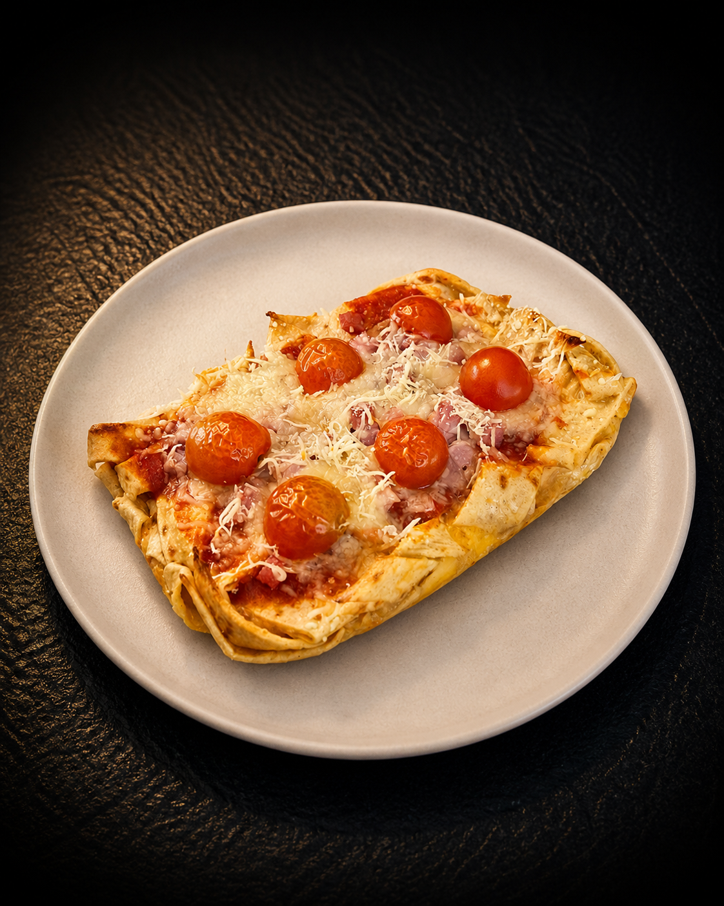

La Tortizza

Ingrédients
- 2 wraps
- 2 œufs
- 25 g de concentré de tomates
- 35 g de jambon
- 100 g de poivrons rouges
- 20 g de fromage allégé râpé
- Autres légumes pour la garniture, selon envie
Préparation
- Couper les 2 wraps en lamelles.
- Dans un plat qui peut aller au four, mélanger les lamelles de wraps avec les 2 œufs pour créer la base de la Tortizza.
- Garnir avec le concentré de tomates, le jambon, les poivrons rouges, le fromage allégé râpé et les autres légumes souhaités.
- Cuire au four à 180°C pendant 20 minutes.
Valeurs nutritionnelles (approx.)
Par portion : 510 kcal • 44 g protéines